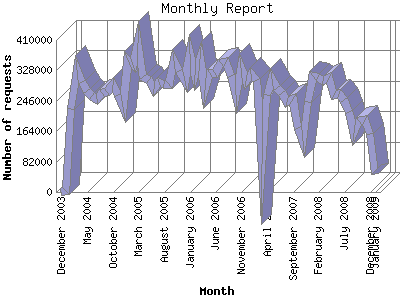

The Monthly Report identifies activity for each month in the report
time frame. Remember that each page hit can result in several server requests
as the images for each page are loaded.
Note: Depending on the
report time frame, the first and last months may not represent a complete
month's worth of data, resulting in lower hits.

| Month | Number of requests | Number of page requests | |
|---|---|---|---|
| 1. | January 2009 | 48,822 | 5,210 |
| 2. | December 2008 | 155,990 | 15,441 |
| 3. | November 2008 | 193,319 | 19,916 |
| 4. | October 2008 | 192,550 | 19,024 |
| 5. | September 2008 | 159,615 | 15,111 |
| 6. | August 2008 | 216,159 | 18,335 |
| 7. | July 2008 | 247,558 | 19,263 |
| 8. | June 2008 | 264,908 | 19,610 |
| 9. | May 2008 | 262,865 | 19,765 |
| 10. | April 2008 | 307,150 | 21,282 |
| 11. | March 2008 | 300,257 | 18,996 |
| 12. | February 2008 | 311,176 | 17,887 |
| 13. | January 2008 | 313,422 | 20,090 |
| 14. | December 2007 | 243,469 | 20,483 |
| 15. | November 2007 | 138,079 | 7,936 |
| 16. | October 2007 | 171,488 | 11,571 |
| 17. | September 2007 | 251,846 | 14,942 |
| 18. | August 2007 | 243,986 | 17,121 |
| 19. | July 2007 | 266,092 | 20,692 |
| 20. | June 2007 | 281,143 | 21,130 |
| 21. | May 2007 | 305,012 | 17,855 |
| 22. | April 2007 | 261,443 | 18,783 |
| 23. | March 2007 | 75,708 | 5,914 |
| 24. | February 2007 | 301,881 | 19,926 |
| 25. | January 2007 | 317,325 | 21,701 |
| 26. | December 2006 | 299,800 | 21,755 |
| 27. | November 2006 | 333,534 | 21,160 |
| 28. | October 2006 | 261,140 | 21,124 |
| 29. | September 2006 | 312,634 | 21,014 |
| 30. | August 2006 | 349,643 | 22,635 |
| 31. | July 2006 | 348,758 | 21,597 |
| 32. | June 2006 | 321,732 | 20,997 |
| 33. | May 2006 | 319,731 | 27,710 |
| 34. | April 2006 | 273,980 | 23,496 |
| 35. | March 2006 | 359,754 | 25,463 |
| 36. | February 2006 | 315,590 | 20,739 |
| 37. | January 2006 | 371,147 | 22,689 |
| 38. | December 2005 | 299,572 | 19,793 |
| 39. | November 2005 | 326,472 | 19,195 |
| 40. | October 2005 | 352,978 | 24,343 |
| 41. | September 2005 | 291,872 | 17,565 |
| 42. | August 2005 | 290,725 | 18,131 |
| 43. | July 2005 | 296,091 | 18,192 |
| 44. | June 2005 | 276,875 | 17,025 |
| 45. | May 2005 | 303,011 | 19,953 |
| 46. | April 2005 | 310,047 | 19,348 |
| 47. | March 2005 | 401,545 | 22,398 |
| 48. | February 2005 | 342,382 | 19,406 |
| 49. | January 2005 | 355,704 | 18,675 |
| 50. | December 2004 | 228,131 | 15,576 |
| 51. | November 2004 | 261,147 | 14,842 |
| 52. | October 2004 | 288,821 | 15,228 |
| 53. | September 2004 | 268,467 | 14,533 |
| 54. | August 2004 | 267,139 | 14,871 |
| 55. | July 2004 | 250,446 | 14,782 |
| 56. | June 2004 | 258,954 | 13,733 |
| 57. | May 2004 | 273,682 | 14,985 |
| 58. | April 2004 | 297,408 | 14,608 |
| 59. | March 2004 | 328,838 | 16,803 |
| 60. | February 2004 | 223,033 | 13,484 |
| 61. | January 2004 | 3,407 | 804 |
| 62. | December 2003 | 4 | 4 |
Most active month May 2006 : 27,710 pages sent.
Monthly average: 17406.9841269841 pages sent. 289.594 TB bytes served. 261832.650793651 requests handled.
This report was generated on January 11, 2009 00:22.
Report time frame December 18, 2003 11:34 to January 11, 2009 00:21.